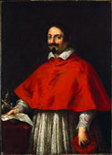

From
the collection

Pietro
da Cortona (Pietro Berrettini)
Portrait of Cardinal Pietro Maria Borghese
(created cardinal 1624, died 1642)
About 1642
Oil on canvas
H.53 x W.39 in.
Anonymous Gift
Pietro
da Cortona painted this portrait of Cardinal Pietro Maria Borghese while
he was living in Rome. Cardinal Verospi, Bishop of Osimo, who had work
obligations in Rome, may have seen this painting or other works by Pietro
da Cortona.
Pietro da Cortona was originally commissioned to paint The Immaculate Conception for the church at Osimo. Cardinal Verospi hired Pietro da Cortona and gave him a down payment to begin work. However, for reasons unknown, da Cortona later declined the commission and returned the down payment. It was then that Cardinal Verospi hired Castiglione to paint the altarpiece of The Immaculate Conception for the church.
Pietro da Cortona was originally commissioned to paint The Immaculate Conception for the church at Osimo. Cardinal Verospi hired Pietro da Cortona and gave him a down payment to begin work. However, for reasons unknown, da Cortona later declined the commission and returned the down payment. It was then that Cardinal Verospi hired Castiglione to paint the altarpiece of The Immaculate Conception for the church.